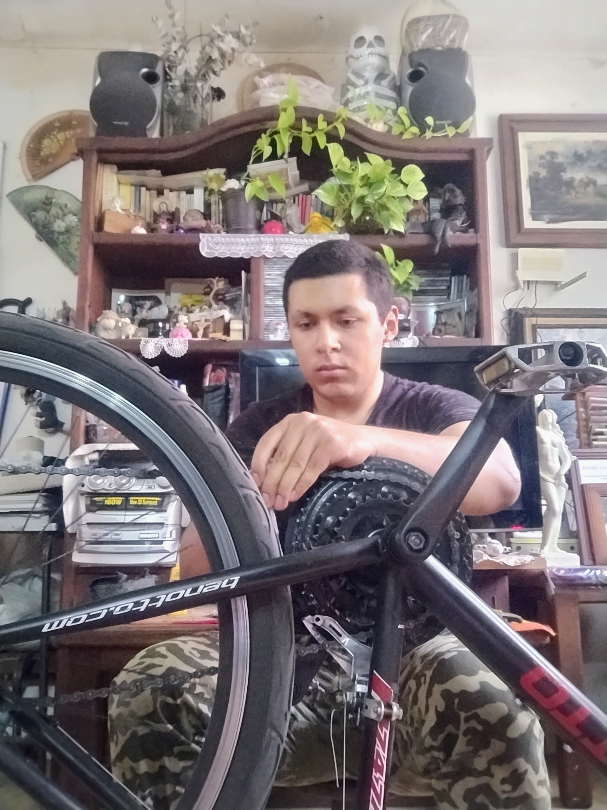
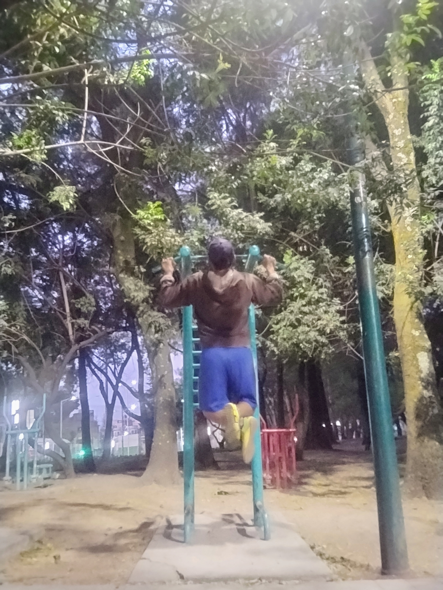
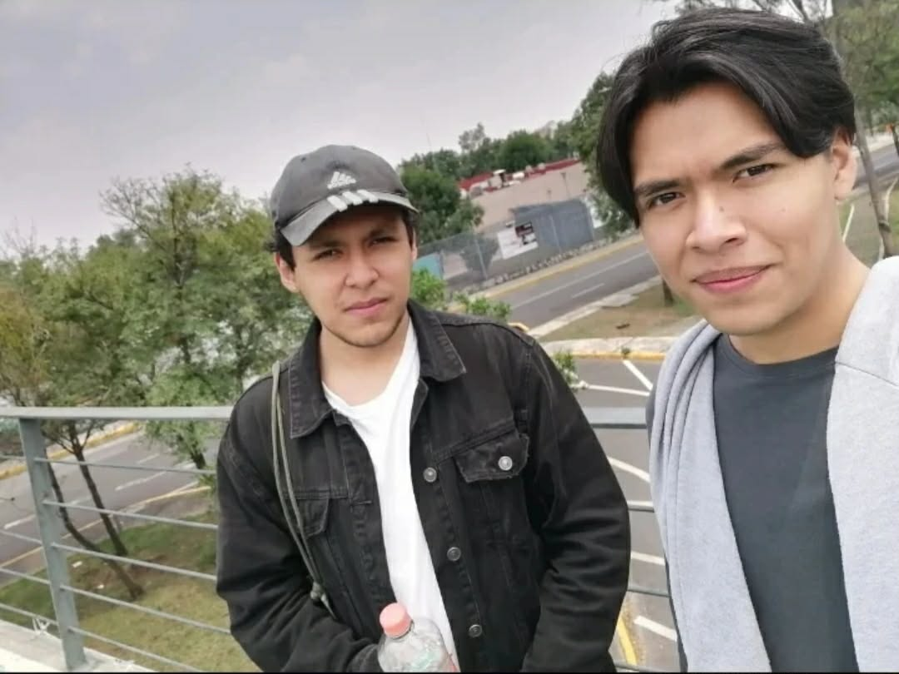

HOBBIES

Disfruto darle mantenimiento a mi bicicleta.

Hago ejercicio de domingo a viernes.

Salir con amigos es uno de mis pasatiempos favoritos.
PGP
ACERCA DE LA CRIPTOGRAFÍA
Whitfield Diffie
Criptógrafo estadounidense y una de las figuras más importantes de la criptografía moderna. Es conocido por ser uno de los pioneros de la criptografía asimétrica
En 1976, junto con Martin Hellman, publicó el artículo "New Directions in Cryptography". En él presentaban el Intercambio de claves Diffie-Hellman, un protocolo que resolvía el problema fundamental de cómo intercambiar claves de cifrado de forma segura a través de un canal inseguro.
Historia del algoritmo RSA
El algoritmo RSA permitio no solo acordar una clave secreta, sino también cifrar mensajes y crear firmas digitales sin necesidad de compartir información privada de antemano.
Durante un año, Rivest y Shamir propusieron ideas mientras Adleman encontraba fallos en ellas, hasta que finalmente dieeron con un sistema basado en un problema matemático extremadamente difícil: la factorización de números enteros muy grandes. La seguridad de RSA reside en que, aunque es fácil multiplicar dos números primos enormes para obtener su producto, es computacionalmente inviable hacer el camino inverso y descubrir los dos primos originales a partir de ese producto.
Evento importante
Un equipo de criptógrafos polacos, liderado por Marian Rejewski, logra los primeros avances para descifrar la máquina Enigma. Posteriormente, en Bletchley Park (Reino Unido), Alan Turing y su equipo, que incluía a la brillante Joan Clarke, desarrollan la Bombe, un dispositivo que automatiza el descifrado de los mensajes nazis. Se estima que esta hazaña acortó la Segunda Guerra Mundial hasta en dos años.